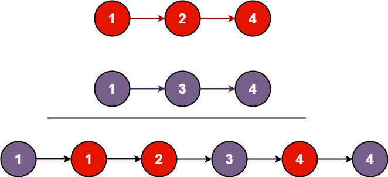

题面
将两个升序链表合并为一个新的 升序 链表并返回。新链表是通过拼接给定的两个链表的所有节点组成的。
示例 1：

输入： l1 = [1,2,4], l2 = [1,3,4]
输出：[1,1,2,3,4,4]示例 2：
输入： l1 = [], l2 = []
输出：[]示例 3：
输入： l1 = [], l2 = [0]
输出：[0]提示：
- 两个链表的节点数目范围是
[0, 50] -100 <= Node.val <= 100l1和l2均按 非递减顺序 排列
思路
- 虚拟头节点 + 双指针逐个比较：
cur = dum = ListNode(0)：创建虚拟头节点，dum钉住不动，cur负责构建链表- 循环比较：当
list1和list2都不为空时，谁小就把谁接到cur后面 - 循环结束后，把剩余的那条链表直接接到
cur.next（本身已有序，无需逐个） - 返回
dum.next（跳过虚拟头节点）
- 易错点：
- 每次接完节点后必须 `cur = cur.next`：不移动 cur 的话，下一轮循环会覆盖
cur.next，最终链表只剩最后一个节点 - `ListNode(0)` 的 0 只是占位值：虚拟头节点不会出现在结果中，返回的是
dum.next
代码实现
class Solution:
def mergeTwoLists(self, list1: Optional[ListNode], list2: Optional[ListNode]) -> Optional[ListNode]:
cur = dum = ListNode(0)
while list1 and list2:
if list1.val < list2.val:
cur.next = list1
list1 = list1.next
else:
cur.next = list2
list2 = list2.next
cur = cur.next
cur.next = list1 if list1 else list2
return dum.next- 复杂度：时间 O(m + n)，空间 O(1)（只用了指针，未创建新节点）